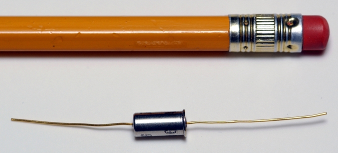

Figure 2:
All four accelerometer switches in the Genesis sample return capsule remained inactive during reentry. The error occurred in the design stage and survived every subsequent review and test. Photo courtesy of NASA.
Back to Article